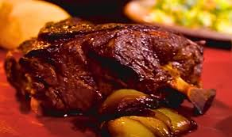

Pulled Pork

Description
Smoky pulled pork with chipotle mayonnaise, need I say more?
Ingredients
- Pork butt (front middle shoulder), bone in, rind removed 2-3kg
- Buttermilk, to coat
- 4 onions, peeled and quartered
- 4 garlic cloves, peeled and crushed
- 3 tbsp paprika
- 2 tbsp demerara sugar
- 4 thyme sprigs, leaves finely chopped, stalks reserved
- Olive oil
- Salt
- Pepper
Ingredients for Chipotle Mayonnaise
- Mayonnaise 300g
- 1–2 tbsp chipotle paste or 2 tsp smoked paprika
- 1 tsp honey
- 1 tbsp mustard
Steps
- Mix the paprika, sugar, garlic and thyme leaves in a bowl. Season with salt and pepper, then add a little olive oil to create a paste. Rub the mixture all over the pork, massaging it into the meat. While it’s absolutely fine to cook the pork at this point, you can also cover and chill it for up to 24 hours to absorb the spice rub.
- Preheat the oven to 140C.
- Put the onions into a roasting tin, sprinkle with the thyme stalks and place the pork, fattiest side up, on top. Roast for 1 hour, then cover with foil and cook for a further 4–5 hours, until the meat is really tender and falling off the bone.
- Meanwhile, make the chipotle mayo. Combine all the ingredients in a bowl, season with salt and pepper and mix well.
- Once the pork is cooked, leave it covered loosely with foil and set aside to rest for up to 1 hour before pulling the meat away from the bone in chunks. Serve with the smoky mayo and baps alongside.